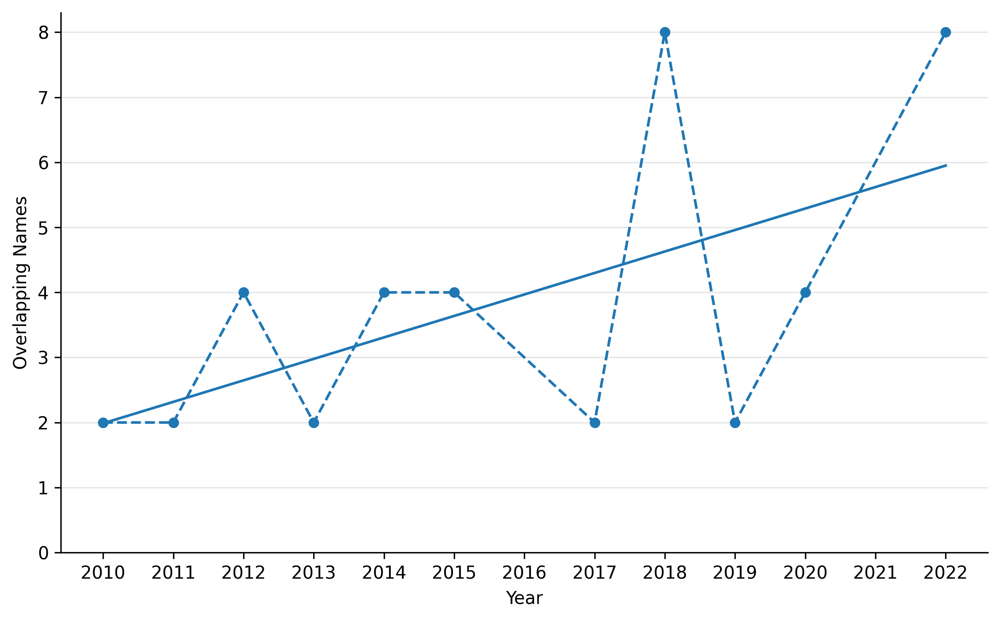
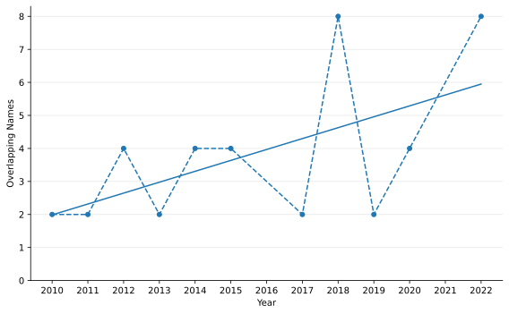

Book Figures
Figure 10: Phonological and graphic overlap in boys’ and girls’ names
PNG
SVG
Figure 13A: Overlap trend in the top 50 Meiji Yasuda names (phonological forms)
Figure 13B: Overlap trend in the top 50 Meiji Yasuda names (phonological forms)
Figure 14A: Overlap trend in the top 100 Meiji Yasuda names (graphic forms)
Figure 14B: Overlap trend in the top 100 Meiji Yasuda names (graphic forms)
Figure 15A: Overlap trend in the top 500 Heisei Namae names (graphic forms)
Figure 15B: Overlap trend in the top 500 Heisei Namae names (graphic forms)
Figure 16: Gender-neutral names (F-ratio ∈ [0.2, 0.8]) in the Heisei Namae Jiten data